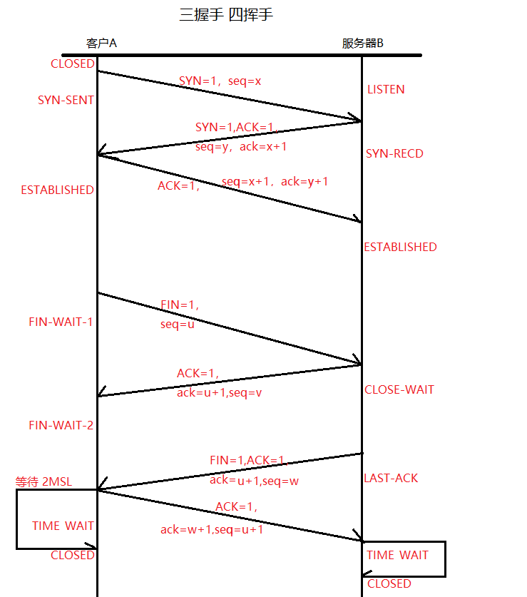

简介
目标代码文件、可执行文件和库：用编译器将源文件编译成中间目标文件（如obj文件），然后再使用链接器（将目标文件和库文件以及系统的标准启动文件合并成一个可执行文件）将中间目标文件链接生成最终的可执行文件（如exe文件），如：my.c源文件通过gcc -c my.c编译生成a.o中间文件，然后再通过gcc -o my a.o（也可以直接gcc -o my my.c直接生成可执行文件）
IDE集成开发环境：Microsoft Visual Studio Express和Pelles C，以及苹果的Xcode
语法错误：再编译程序时编译器会发现并报告错误信息，如缺少分号、关键字作为变量名；
语义错误：意思上错误
| auto | break | case | char |
| const | continue | default | do |
| double | else | enum | extern |
| float | for | goto | if |
| int | long | register | return |
| short | signed | sizeof | static |
| struct | switch | typedef | union |
| unsigned | void | volatile | while |
| _Bool | _Complex | _Imaginary | inline |
| restrict | _Alignas | _Alignof | _Atomic |
| _Generic | _Noreturn | _Static_assert | _Thread_local |
| 类型 | 存储大小(字节) | 值范围 |
|---|---|---|
| char | 1 | -128~127 或 0~255 |
| unsigned char | 1 | 0~255 |
| signed char | 1 | -128~127 |
| int | 2/4 | -32,768~32,767 或 -2,147,483,648~2,147,483,647 |
| unsigned int | 2/4 | 0~65,535 或 0~4,294,967,295 |
| short | 2 | -32,768~32,767 |
| unsigned short | 2 | 0~65,535 |
| long | 4 | -2,147,483,648~2,147,483,647 |
| unsigned long | 4 | 0~4,294,967,295 |
| float | 4 | 1.2E-38~3.4E+38 |
| double | 8 | 2.3E-308~1.7E+308 |
| long double | 16 | 3.4E-4932~1.1E+4932 |
| 优先级 | 运算符 | 名称或含义 | 使用形式 | 结合方向 | 说明 |
|---|---|---|---|---|---|
| 1 | [] | 数组下标 | 数组名[常量表达式] | 左到右 | |
| () | 圆括号 | （表达式）/函数名(形参表) | |||
| . | 成员选择（对象） | 对象.成员名 | |||
| -> | 成员选择（指针） | 对象指针->成员名 | |||
| ++ | 后置自增运算符 | ++变量名 | 单目运算符 | ||
| -- | 后置自减运算符 | --变量名 | 单目运算符 | ||
| 2 | - | 负号运算符 | -表达式 | 右到左 | 单目运算符 |
| (类型) | 强制类型转换 | (数据类型)表达式 | |||
| ++ | 前置自增运算符 | 变量名++ | 单目运算符 | ||
| -- | 前置自减运算符 | 变量名-- | 单目运算符 | ||
| * | 取值运算符 | *指针变量 | 单目运算符 | ||
| & | 取地址运算符 | &变量名 | 单目运算符 | ||
| ! | 逻辑非运算符 | !表达式 | 单目运算符 | ||
| ~ | 按位取反运算符 | ~表达式 | 单目运算符 | ||
| sizeof | 长度运算符 | sizeof(表达式) | |||
| 3 | / | 除 | 表达式/表达式 | 左到右 | 双目运算符 |
| * | 乘 | 表达式*表达式 | 双目运算符 | ||
| % | 余数（取模） | 整型表达式%整型表达式 | 双目运算符 | ||
| 4 | + | 加 | 表达式+表达式 | 左到右 | 双目运算符 |
| - | 减 | 表达式-表达式 | 双目运算符 | ||
| 5 | << | 左移 | 变量<<表达式 | 左到右 | 双目运算符 |
| >> | 右移 | 变量>>表达式 | 双目运算符 | ||
| 6 | > | 大于 | 表达式>表达式 | 左到右 | 双目运算符 |
| >= | 大于等于 | 表达式>=表达式 | 双目运算符 | ||
| < | 小于 | 表达式<表达式 | 双目运算符 | ||
| <= | 小于等于 | 表达式<=表达式 | 双目运算符 | ||
| 7 | == | 等于 | 表达式==表达式 | 左到右 | 双目运算符 |
| != | 不等于 | 表达式!= 表达式 | 双目运算符 | ||
| 8 | & | 按位与 | 表达式&表达式 | 左到右 | 双目运算符 |
| 9 | ^ | 按位异或 | 表达式^表达式 | 左到右 | 双目运算符 |
| 10 | | | 按位或 | 表达式|表达式 | 左到右 | 双目运算符 |
| 11 | && | 逻辑与 | 表达式&&表达式 | 左到右 | 双目运算符 |
| 12 | || | 逻辑或 | 表达式||表达式 | 左到右 | 双目运算符 |
| 13 | ?: | 条件运算符 | 表达式1? 表达式2: 表达式3 | 右到左 | 三目运算符 |
| 14 | = | 赋值运算符 | 变量=表达式 | 右到左 | |
| /= | 除后赋值 | 变量/=表达式 | |||
| *= | 乘后赋值 | 变量*=表达式 | |||
| %= | 取模后赋值 | 变量%=表达式 | |||
| += | 加后赋值 | 变量+=表达式 | |||
| -= | 减后赋值 | 变量-=表达式 | |||
| <<= | 左移后赋值 | 变量<<=表达式 | |||
| >>= | 右移后赋值 | 变量>>=表达式 | |||
| &= | 按位与后赋值 | 变量&=表达式 | |||
| ^= | 按位异或后赋值 | 变量^=表达式 | |||
| |= | 按位或后赋值 | 变量|=表达式 | |||
| 15 | , | 逗号运算符 | 表达式,表达式,… | 左到右 | 从左向右顺序运算 |
volatile：确保本条语句不会因为编译器的优化而省略
大端小端
大端是指数据的高字节保持在内存的低地址中，而数据的低字节保持在内存的高地址中，类似于把数据当作字符串顺序处理，地址由小到大增加，而数据从高往低放置。小端是数据的高字节保存在内存的高地址中，而数据的低字节保持在内存的地址中，即将地址的高低和数据位权有效的结合起来，高地址部分权值高，低地址部分权值低。
大端：低地址存放在高位。如：
内存地址 高地址
0x4003 buf[3] (0x78) ——低位
0x4002 buf[2] (0x56)
0x4001 buf[1] (0x34)
0x4000 buf[0] (0x12) ——高位
小端：低地址存放在低位。如：
内存地址 高地址
0x4000 buf[3] (0x12) ——高位
0x4001 buf[2] (0x34)
0x4002 buf[1] (0x56)
0x4003 buf[0] (0x78) ——低位
static：局部变量或函数
inline：内联
死锁：两不同线程拥有两不同互斥锁时，一个线程试图获取对方持有的锁，此时导致死锁
锁死：一个锁未释放的情况下再次获取锁会导致线程锁死，阻塞。
#、##、__VA_ARGS__的使用
一般用于打印信息接口
#井号：用来吧参数转换成字符串，其中#之后到参数之间的空格会被删除，一般不会有空格
##双井号：用于将两个子串连接起来形成新的子串（就是指编译器能够识别的最小语法单元），注意不可以是第一个或最后一个。常用于使用宏定义批量生成函数或者变量
__VA_ARGS__：用于在宏替换部分，表示可变参数列表，好像是必须有一个为确认值，另一个可变值。
##__VA_ARGS__：和上面类似，加上##用于当可变参数个数为0时起到将前面多余的逗号 , 去掉，否则会编译出错
小知识
- Ninja：快速编译的编译器，相对于make使用makefile相互依赖来编译，这种更小巧且高效
- shell：脚本
source xx.sh：配置当前终端的环境变量
cout：打印到屏幕（和 c++ 中 cout 类似）
echo `date +%Y:%m:%d,%H:%M:%S`：显示年月日时分秒，其中 ` 是反引号 - bat：编译预处理文件
- makefile：脚本文件，通过依赖关系编译生成可执行文件
由于此处知识过多，详情请看 Makefile - TCPIP 网络连接：
- .TCP 端口状态说明 ESTABLISHED、TIME_WAIT、CLOSE_WAIT、LISTENING、SYN_SENT 等
LISTENING：监听状态，服务启动后的状态
ESTABLISHED：两机器建立连接，这时两端可以进行通信了
CLOSE_WAIT：对方主动关闭连接或网络异常导致连接中断，此状态下可调用 close()来正确关闭连接
TIME_WAIT：我方主动调用 close()关闭连接，收到对方确认后状态变为 TIME_WAIT
SYN_SENT：请求连接，当访问另一端时先发个同步信号给端口，此时状态为 SYN_SENT，若连接成功则状态变为 ESTABLISHED
具体状态如下：
 - socket 的阻塞和非阻塞：有两种方式，一种为fcntl设置（设置之后每次的对于sockfd 的操作都是非阻塞的），另一种为recv/send的参数设置（临时将sockfd 设置为非阻塞模式,而无论原有是阻塞还是非阻塞）
fcntl 的阻塞：
flags = fcntl(sockfd,F_GETFL,0);
fcntl(sockfd,F_SETFL,flags&~O_NUNBLOCK); //设置成阻塞模式
fcntl 的非阻塞：
flags = fcntl(sockfd, F_GETFL, 0); //获取文件的flags值
fcntl(sockfd, F_SETFL, flags | O_NONBLOCK); //设置成非阻塞模式
recv/send的设置
recv(sockfd, buff, buff_size,MSG_DONTWAIT); //非阻塞模式的消息发送
send(scokfd, buff, buff_size, MSG_DONTWAIT); //非阻塞模式的消息接受
- .TCP 端口状态说明 ESTABLISHED、TIME_WAIT、CLOSE_WAIT、LISTENING、SYN_SENT 等